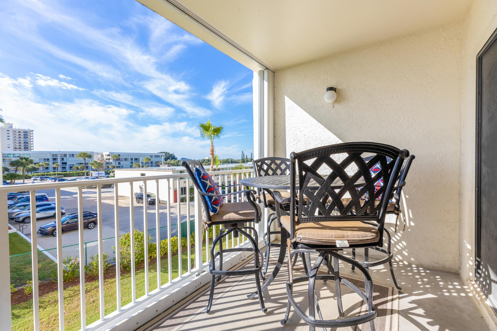

Best Viewing Spots
Ranked by how easy they are to reach from Sandcastles.

Best Option · 0 miles
Your Sandcastles Balcony
Upper-floor oceanfront units have a clear northwest sightline toward LC-39 and SLC-40. No traffic, no crowds — just step outside with your drink.

Easy Walk · 0 miles
The Beach at Sandcastles
Walk 100 feet to the sand and face north. Wide open sky, no buildings blocking your view. Great for photos with the ocean in frame.

Short Drive · 6 miles
Jetty Park, Port Canaveral
The closest public land to the launchpads outside of KSC. Free parking, a beach, and a direct sightline to both launch complexes. Get there 30 min early.

Official · 12 miles
KSC Visitor Complex
Paid launch viewing tickets give you access to their official viewing site and countdown commentary. Worth it once — especially if paired with a day at the complex.